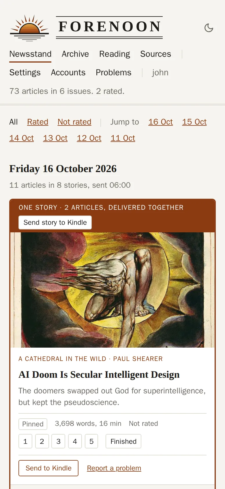
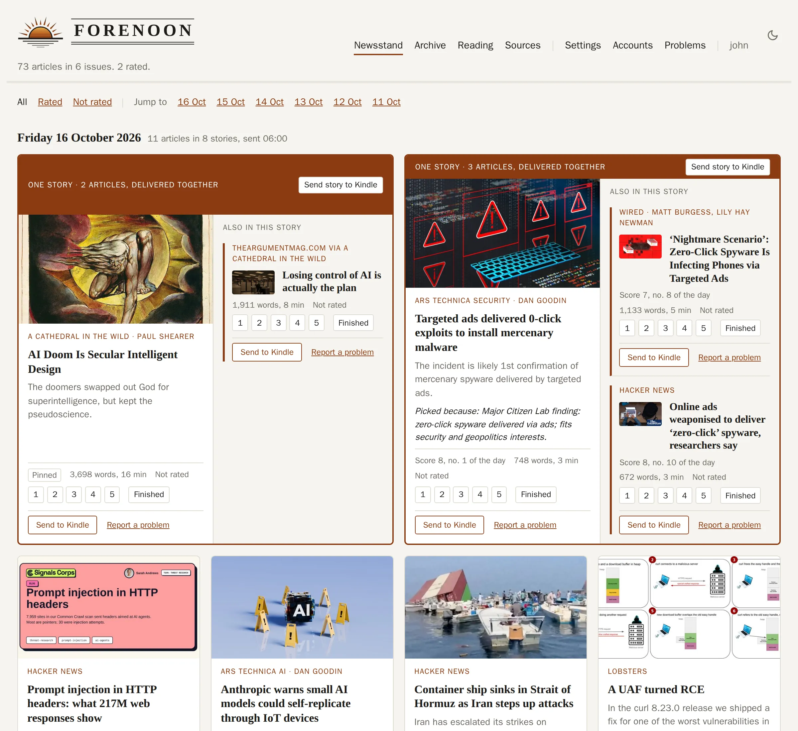
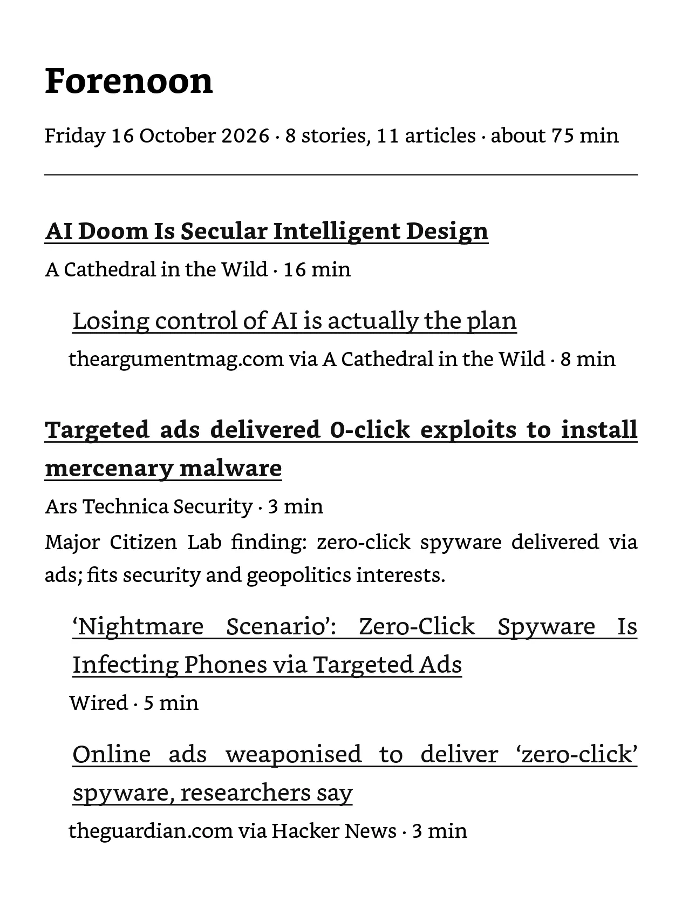
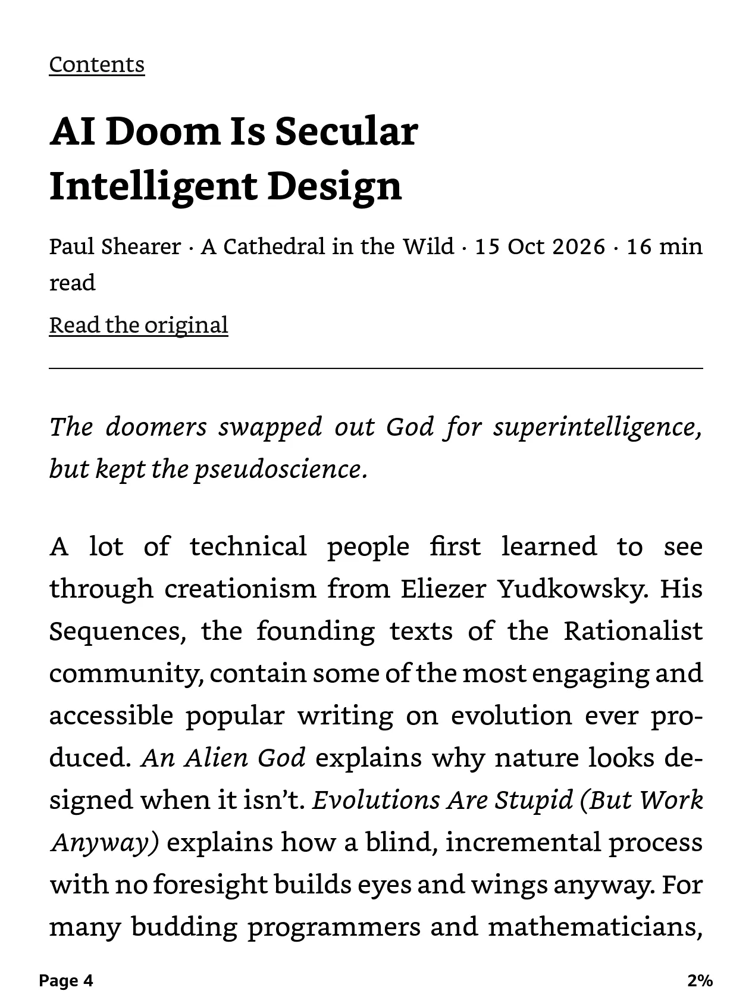

A morning paper edited for one reader: you.
Every morning Forenoon reads your feeds and the front pages you follow, has a model choose what you would want to read, and makes it the day's issue: a book on your Kindle, a newsstand on the web. Rate what you read, and tomorrow learns from it.
Open source, MIT. Run your own AI-powered news aggregator for about two cents a day.

Why
A self-hosted news aggregator where the AI reads the slop, not you.
Forenoon exists to cut the time spent scrolling, to find the writing you actually care about, and to make an e-reader useful for more than books.
Feeds serve whatever keeps you on them. Aggregators are paid for by advertisers or pushed along by an agenda, and they know far less about you than you could say in a paragraph. Forenoon has one job: find what you would choose to read yourself, and put it where you read best.
See what it chose today
Three readers with different interests share one set of sources, and each morning the same pool becomes three different issues. Their newsstands are open to look at, read only: the web side of Forenoon, with the model's reason on every card and an archive of everything it weighed and passed over.
Mara
Systems programming, databases and compilers, and the people who build them. Long technical posts over news.
Open Mara's newsstandTheo
Economics, housing and energy policy, and reported pieces on how institutions actually work.
Open Theo's newsstandJune
Science writing, natural history and long reported features; a little news when it matters.
Open June's newsstand

How articles are chosen
A few hundred articles go in each morning and eight or so come out, each with its reason. What you rate changes the next morning's choosing.
- A few hundredYour sources
Your feeds, your premium subscriptions, and the top of aggregators like Hacker News and Lobsters: every morning, titles and openings from all of them.
- Every one scoredFiltered by your interests
A paragraph in your own words is the filter. Each article is ranked against it from its title and opening.
- 40 read wholeThe model reads the best in full
The forty strongest are fetched and the model reads them whole, so a good title with nothing behind it loses.
- 8 deliveredThe day's issue
Eight stories or so, chosen with a reason each: a book on the Kindle, a newsstand on the web.
- Rated by youYou rate what you read
1 to 5 from the Kindle or the web, with an optional one-tap reason. Tomorrow's filter learns from it.
One measured day: 23 sources including a whole Financial Times, about 165 candidates ranked, 40 read in full, 8 stories delivered in 80 seconds, for about two cents of Claude Haiku.
Every reader gets their own paper
One install serves a household. The sources are shared; the taste, the ratings and the morning issue are each reader's own. Mara, Theo and June above are one install and one pool of articles.
- Their own interests, ratings and issue
Each reader writes their own interests, rates their own articles and gets their own book and newsstand each morning. What one reader rates changes only their own choosing.
- Shared sources, followed or not
A feed added to the household is followed by everyone until a reader unfollows it. A feed can also stay private to whoever added it, and each reader pins what they never want to miss.
- Invited by email
An admin invites a reader by address. They choose a name, a password and their Kindle, follow every shared source from the start, and their first issue arrives the next morning.
- About two cents a reader
Ranking and reading run for each reader, so a household of four is about eight cents a day. A page fetched for one reader is kept and reused when another reader's morning picks the same article.
Features you may care about
A line each. Open one for the detail.
Advanced ebook typesetting.One book a day with a contents page, set for e-ink.
Articles stripped to their text and pictures. Code is set in an embedded monospaced font and long lines wrap under their own indent; tables stay tables; emoji are drawn from an embedded font, since the Kindle's own have none.



Supports exploration.One place a day goes to an article from below the cut.
Every issue gives its last place to an article picked at random from those the model scored too low to deliver, and records the odds it had. Without it, your ratings could only confirm what the model already likes; with it, they can correct it.
Cents a day, by design.Only the forty strongest articles are read whole, each cut at 2,500 words.
Ranking works from titles and openings; only the best forty are fetched and read in full, each cut at 2,500 words. A daily token cap you set stops a bad day from costing more, every call is logged with its price on the web pages, and the model for each step is a setting, so a stronger one for choosing the issue costs cents rather than dollars.
Premium subscriptions.Most work out of the box with your own cookie.
Add the site's feeds like any other and paste the cookie your browser holds for it. The articles chosen are fetched signed in as you, a few a day and no faster than a reader would, so they arrive whole rather than as a headline and a teaser. A site that is not read correctly? File an issue.
Your own links.Paste a link for tomorrow's issue, or send it to the Kindle now.
The web pages take any link: into tomorrow's issue, to the Kindle now as a book of its own, or filed as already read along with your rating. Any article or story on the newsstand can be sent again the same way.
Link-only sources.A feed you want as headlines only shows its picks as links.
A paywalled site with no cookie, or any feed you only want to glance at, can be set to show its picks as links on the newsstand instead of fetching their pages. They still compete for a place on merit.
Yours to run
Forenoon is an application you run yourself and share with your household and friends. No ads, no engagement metrics, no telemetry.
What it needs:
- A machine that runs Docker and is on in the morning. A NAS is plenty.
- An Anthropic API key. A day's choosing costs about two cents. Without one it still delivers: pinned sources first, then the newest articles in turn across sources.
- A mail relay your Kindle accepts, to deliver the book.
- A Cloudflare tunnel, if you want the pages and the rating links reachable away from home.
Run it
Two containers, the pipeline and the web pages, with the tunnel beside them if you want one. Everything is kept in one SQLite file and a folder.
git clone https://github.com/johnhringiv/forenoon
cd forenoon/deploy
cp .env.example .env # the mail server, the API key, your time zone
docker compose up -d
Then create your reader, add your feeds and write your interests in the browser. The setup guide covers the mail relay, Amazon's approved sender list and the tunnel; the product document describes everything it does today.